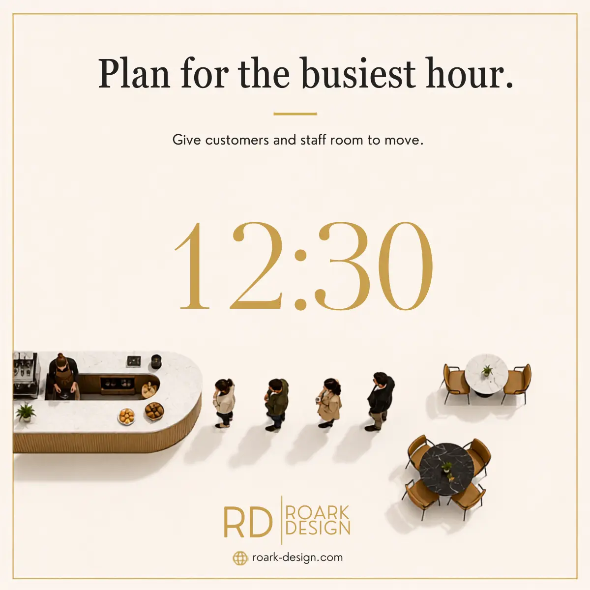
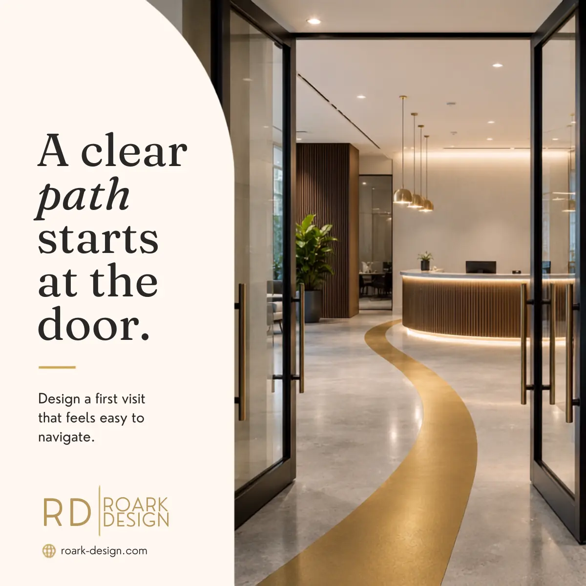
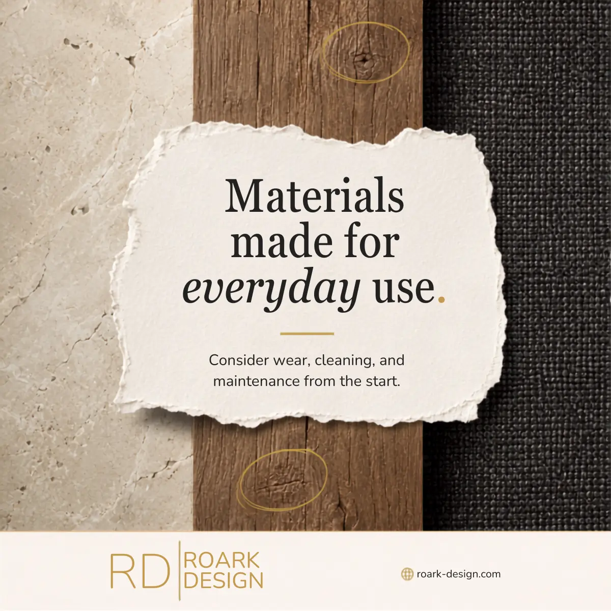
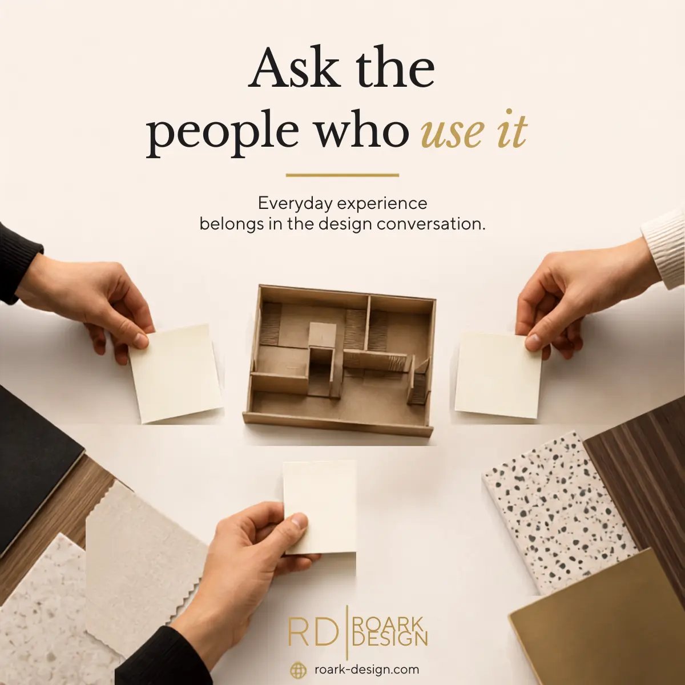

Building a clearer content system for a technical design brand
My role
Recurring calendar ownership, content strategy, copywriting, visual production, review coordination




ROARK needed LinkedIn content that could explain the value of commercial architecture without relying on generic design language or repeating the same service claims.
I built each 12–16-post cycle around the moments when design decisions become operational decisions: peak-hour traffic, first-time wayfinding, maintenance demands, storage, acoustics, and employee workflow. That framing made technical expertise easier for a business audience to recognize.
Approach
Created practical content pillars, matched each topic to a specific audience question, and used restrained calls to action instead of forcing a sales pitch into every post.
Execution
Wrote LinkedIn copy, produced branded visuals, requested service and project context from leadership, incorporated review notes, and prepared multiple cycles for publishing in Loomly.
Outcome
A repeatable content system that met recurring deadlines and earned positive stakeholder feedback for imagery, consistency, and website-directed calls to action.